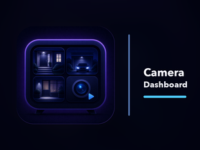
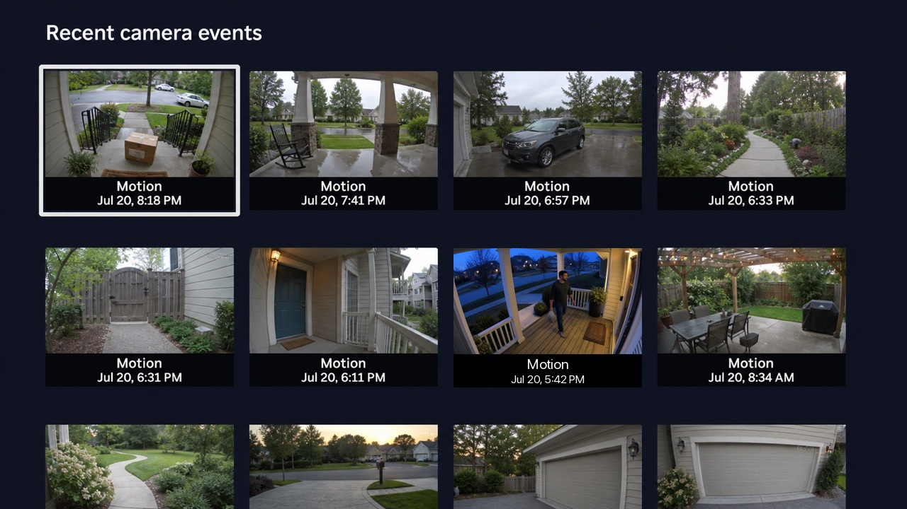
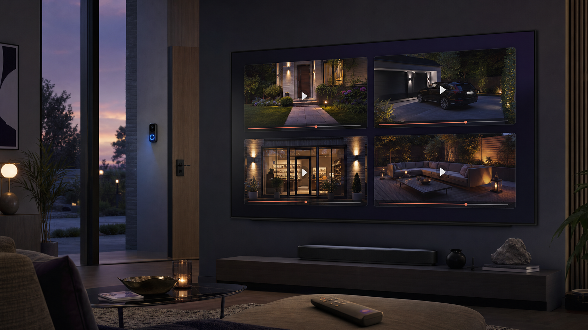

Camera Dashboard
Keep an eye on all your Ring cameras from your Roku TV.
Get it on the Roku Channel StoreConnect Camera Dashboard through the Ring Appstore, choose the cameras you want to include, then open the Camera Dashboard Roku channel to see each camera’s latest motion event in one clear overview.
Select any camera to watch the recorded event.
Ideal for homes, short-term rentals, stores, and workplaces.

Every camera’s latest motion event in one clear overview.

Watch recorded events right on your TV.
Camera Dashboard is an independent third-party application and is not affiliated with, endorsed by, or sponsored by Ring, Amazon, or Roku. Ring and Roku are trademarks of their respective owners. Compatible devices and a Ring subscription supporting recorded events are required.
Camera Dashboard Terms of Use
Effective date: July 26, 2026
These Terms of Use (“Terms”) are an agreement between you and Ioloware (“Ioloware,” “we,” “us,” or “our”). By connecting, pairing, accessing, or using Camera Dashboard, you agree to these Terms and acknowledge the Privacy Policy. If you do not agree, do not use the service and disconnect it from your Ring account.
Service Description and Eligibility
Camera Dashboard is a convenience application that displays recent Ring motion and doorbell events, snapshots, and user-selected recorded clips on a paired Roku device. It does not provide live video. You must be legally able to enter into these Terms and have authority to connect the Ring account and Roku devices you use.
Not a Security or Emergency Service
Camera Dashboard is not a monitored security system, alarm service, emergency-notification service, or emergency-response service. Do not rely on it to detect, prevent, report, or respond to an intrusion, fire, medical emergency, or other dangerous event, or to protect people or property. Events, snapshots, and recordings may be delayed, incomplete, unavailable, or inaccurate. Contact emergency responders directly when assistance may be needed.
Your Responsibilities
You are responsible for securing your Ring account, Roku device, home network, and access to pairing codes. You may use Camera Dashboard only with accounts, devices, cameras, and recordings you are authorized to access. You must comply with applicable law, respect the privacy and other rights of people captured by your cameras, provide any legally required notices or consents, and follow the applicable Ring and Roku terms. You must not misuse the service, probe or disrupt it, bypass access controls, share device credentials, or use it to violate another person’s rights.
Your Content and Limited Permission
You retain any rights you have in your camera information and recordings. You authorize Ioloware and its service providers to access, process, transmit, and temporarily store that information only as needed to provide, secure, maintain, and troubleshoot Camera Dashboard, as described in the Privacy Policy.
Third-Party Services and Availability
Camera Dashboard depends on services, devices, accounts, subscriptions, networks, and APIs provided by Ring, Roku, Amazon Web Services, internet providers, and others. Their terms and privacy practices apply separately. Ioloware does not control and is not responsible for third-party products, changes, outages, content, acts, or omissions. We may change, suspend, restrict, or discontinue all or part of Camera Dashboard, including when required for security, maintenance, legal compliance, or third-party platform changes.
Disclaimer of Warranties
To the maximum extent permitted by applicable law, Camera Dashboard is provided “as is” and “as available.” Ioloware disclaims all express, implied, and statutory warranties, including merchantability, fitness for a particular purpose, title, non-infringement, availability, accuracy, timeliness, security, and uninterrupted or error-free operation. We do not warrant that any event, image, recording, notification, link, or other content will be available, complete, current, or preserved.
Limitation of Liability
To the maximum extent permitted by applicable law, Ioloware and its owners, personnel, contractors, and licensors will not be liable for indirect, incidental, special, consequential, exemplary, or punitive damages, or for loss of data, recordings, revenue, profits, goodwill, use, opportunity, or security, arising from or related to Camera Dashboard, third-party services, service interruption, unauthorized access, or your reliance on displayed information, regardless of the theory of liability and even if advised that such loss was possible.
To the maximum extent permitted by applicable law, the total aggregate liability of Ioloware and those parties for all claims arising from or related to Camera Dashboard will not exceed the greater of the amount you paid Ioloware for Camera Dashboard during the 12 months before the event giving rise to the claim or CAD $100. These exclusions and limits do not apply to fraud, wilful misconduct, gross negligence, death or personal injury caused by negligence, or any liability or consumer right that cannot lawfully be excluded, limited, or waived.
Indemnity
To the extent permitted by law, you agree to defend, indemnify, and hold harmless Ioloware and its owners, personnel, and contractors from third-party claims, damages, and reasonable costs arising from your unlawful or unauthorized use of Camera Dashboard, your violation of another person’s privacy or other rights, or your material breach of these Terms. This obligation applies only to the extent the claim was caused by your conduct.
Suspension and Termination
You may stop using Camera Dashboard at any time. Disconnecting one Roku removes that device’s access; disconnecting Camera Dashboard in the Ring Appstore ends account-wide access as described in the Privacy Policy. We may suspend or terminate access when reasonably necessary to address misuse, security risk, legal requirements, or third-party platform restrictions.
Changes, Governing Law, and General Terms
We may update these Terms by posting a revised version and effective date. Material changes will apply prospectively, and continued use after they take effect constitutes acceptance where permitted by law. These Terms are governed by the laws of Ontario and the federal laws of Canada applicable there, without regard to conflict-of-law rules. Subject to any mandatory consumer right to bring a claim elsewhere, disputes will be brought in the courts located in Ottawa, Ontario.
If a provision is unenforceable, it will be limited or removed only to the minimum extent necessary, and the remaining provisions will continue. These Terms and the Privacy Policy form the entire agreement between you and Ioloware concerning Camera Dashboard and do not limit rights that cannot be waived under applicable law.
Contact
Questions about these Terms may be submitted through the contact form.
Camera Dashboard Privacy Policy
Effective date: July 26, 2026
Camera Dashboard lets you view recent motion and doorbell events from cameras connected to your Ring account on a paired Roku device. This policy explains how Camera Dashboard (“we,” “us,” or “the app”) handles information.
Information We Handle
When you connect your Ring account, Camera Dashboard receives and stores only the information needed to operate the service:
- Ring authorization tokens and an account identifier
- Camera identifiers and names
- Motion and doorbell event types and timestamps
- Event snapshots
- A recorded event clip when you choose to play it
- Random tokens used to pair and authenticate your Roku device
Ring may provide basic profile information while verifying your account connection. Camera Dashboard does not store or use your name or email address.
Our hosting provider may process limited network and diagnostic information required to operate and secure the service.
How We Use Information
We use information only to connect your account, display recent camera events, play recordings you select, maintain security, and troubleshoot the service.
Camera Dashboard does not use camera footage, snapshots, metadata, or other customer data to train or improve artificial intelligence or machine-learning models. The app does not perform facial recognition, biometric identification, object detection, or other AI analysis of camera footage. Because customer data is never used for model training, there is no separate AI-training opt-out and opting out is not required to receive the service.
Storage and Sharing
Camera Dashboard uses Amazon Web Services to host the service and store app data on our behalf. The app communicates with Ring to obtain the camera information and recordings you authorize. Time-limited links are provided to your paired Roku device so it can display snapshots and play recordings.
We do not routinely view customer camera footage. Authorized personnel may access customer data only when necessary to resolve a user-requested support issue, investigate security or abuse, maintain or troubleshoot the service, comply with law, or protect the service and its users. Footage is not reviewed by humans for AI training, advertising, profiling, or content analysis.
We do not otherwise disclose camera data except when required by law or necessary to protect the service and its users.
We use HTTPS, private cloud storage, access controls, and time-limited media links. No storage or transmission method is completely secure, but we take reasonable measures appropriate to the sensitivity of camera data.
Secure Roku Pairing
The Roku displays a cryptographically random, single-use pairing code that expires after 15 minutes. The code can be claimed only from a browser session already authorized through Ring. The Roku must also present a separate 256-bit random polling secret, so knowing the displayed code alone is not enough to obtain its device credential. Pairing attempts are rate-limited.
After pairing, the Roku receives a separate 256-bit random device token. It is stored in the Roku registry and sent only over HTTPS as a bearer credential for Camera Dashboard API requests. Disconnecting the Roku deletes the corresponding server-side device credential and clears the token and cached account state from that Roku.
Retention and Deletion
Camera event records, snapshots, and downloaded recordings become eligible for automatic deletion seven days after they are stored. Deletion is performed automatically by our cloud provider and may take additional time to complete.
Pairing codes expire after 15 minutes, and browser pairing sessions expire after 90 days. Authorization tokens and paired Roku device records are retained while the Ring account remains connected.
Your Choices and Privacy Rights
You choose whether to connect Camera Dashboard to Ring and which recorded events to play. Camera Dashboard displays recent event copies for up to seven days; you can review and manage the original footage through Ring.
Disconnect one Roku: In the Camera Dashboard Roku channel, choose Disconnect Ring Account and confirm. This deletes that Roku’s server-side device credential and clears its local token and cached account state. It does not disconnect the Ring integration or delete data still used by other paired Roku devices.
Disconnect the Ring integration: In the Ring Appstore, disconnect Camera Dashboard to stop all further processing for the Ring account. This revokes the integration, makes Camera Dashboard unavailable to every paired Roku for that account, and triggers deletion of stored authorization tokens, event records, media, browser sessions, and all Roku pairing records.
To request access to or deletion of Camera Dashboard data through another method, submit a request using our contact form and include “Privacy Request” or “Data Deletion” in your message. We may ask you to verify control of the connected account and will confirm when the request is complete.
Children
Camera Dashboard is not directed to children under 13, and we do not knowingly collect personal information directly from children.
Third-Party Services
Your use of Ring, Roku, and Amazon Web Services is also subject to the privacy practices of their respective operators.
Camera Dashboard is an independent third-party application and is not affiliated with, endorsed by, or sponsored by Ring, Amazon, or Roku.
Changes and Contact
We may update this policy when the app or its data practices change. Any revised policy will be posted with an updated effective date.
If we introduce AI capabilities or change how customer data is used, we will update this policy before the change takes effect and provide any notices or choices required by law.
For questions, support, privacy concerns, or deletion requests, please use our contact form.